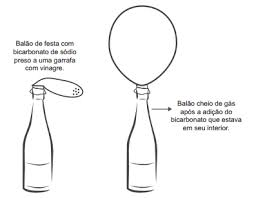
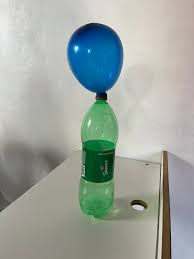
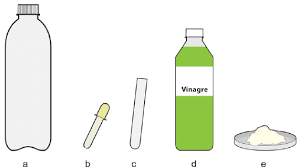
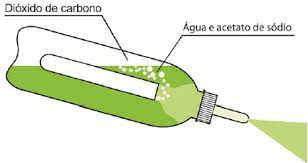

1.Enchendo o balão


Imagens retiradas da internet.
Materiais:uma garrafa pet; Um balão; Vinagre e Bicarbonato de Sódio.
Como fazer: Adicione 100 ml de vinagre na garrafa pet, depois adicione uma certa quantidade de bicarbonato de sódio no balão, torça o balão para que o bicarbonato não entre em contato com o vinagre antes do tempo, agora é só colocar a boca do balão no gargalo da garrafa e destorcer e deixar cair o bicarbonato, a reação ocorrerá com a liberação do dióxido de carbono e assim esse gás encherá o balão.
2.Extintor de incêndio


Imagens retiradas da internet.
Materiais: 1 frasco de refrigerante de 600 mL; 1 tubo de conta-gotas; 1 tubo de ensaio de 35 mL; 450 mL de vinagre; bicarbonato de sódio (NaHCO3).
Como fazer: fure a tampa do frasco com um estilete que caiba o conta-gotas, em seguida insira o conta-gotas no buraco feito, o conta-gotas deve estar bem fixado para evitar vazamentos. Em seguida, adicione 450 mL de vinagre no litro de refrigerante e, no tubo de ensaio adicione o bicarbonato de sódio de modo que o vinagre fique 2 cm abaixo da borda do tubo. Em seguida feche o litro com a tampa que está fixado o conta-gotas, tampe o furo de saída do contagotas com o dedo indicador e sacuda vigorosamente o extintor, incline o extintor para baixo, dirigindo-o para a região que você deseja atingir e tire o dedo da tampa, liberando assim a saída do líquido. Devido a pressão formada pela liberação de CO2, o líquido formado é expelido.